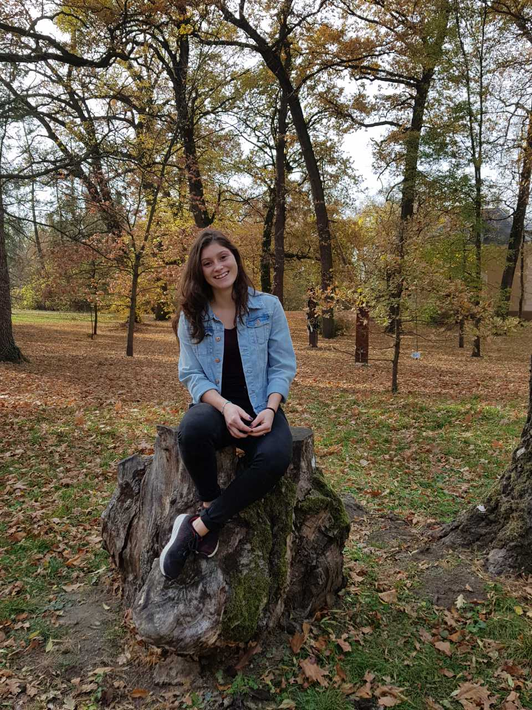

Harmath Eszter vagyok, jelenleg a Budapesti Műszaki és Gazdaságtudományi Egyetem Ipari termék- és formatervező mérnöki szakán tanulok.
Szegeden születtem, ott végeztem eddigi tanulmányaimat is. 13-14 évesen fedeztem fel a rajzolás és az alkotás iránti szeretetem, azóta folyamatosan több témában alkotok.
Legkedvesebb technikáim a tusrajzolás és az akvarell. Emellett kalligráfiával is foglalkozom, valamint szeretek mindenféle kreatív apróságot készíteni.
Jelenleg a számítógépes grafika rejtelmei vonzanak, ebből fejlesztem magam.
Feladataimat igyekszem minél változatosabban, izgalmasabban megvalósítani,
ezzel egyéniséget adva nekik, valamint szeretem a precíz, részletes munkát.